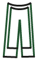
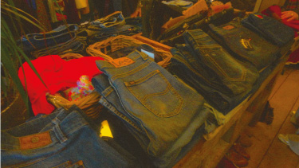

VINTAGE DENIM
Voor de echte denim liefhebber staat er hier wat informatie over wat nou de perfecte vintage denim is om tweedehands te kopen.
POPULAIRE DENIM
Bijna elke vintage kleding winkel verkoopt vintage denim. Het leuke aan denim is dat het heel lang meegaat. Je kan er allemaal verschillende soorten merken van vinden. Helaas zijn de spijkerbroeken heel vaak te groot of juist te klein. Je kan niet zomaar zoals in normale winkels kleding kopen dat direct in je maat is. Tegenwoordig zijn baggy broeken helemaal in, dus daar hoef je je geen zorgen over te maken. Een merk waar echt stapels denim van wordt verkocht is Levi's. De broeken van Levi's gaan allemaal heel goed mee. Een ander merk dat je vaak ziet liggen is Lee, Wrangler en Carhartt.
WELKE DENIM IS HET BESTE?
Een leuk, maar duur merk is Evisu. Zij verkopen broeken met een grote 'E' op de achterkant in allerlei kleuren. Deze broeken hebben ook een hoge doorverkoop waarde. Carhartt is ook een leuk merk als je houdt van streetwear net zoals Evisu. Carhartt zie je bijvoorbeeld veel bij skaters.
Als je een beetje creatief bent en je zoekt naar leuke lapjes stof is de beste plek om die stoffen te kopen de vintage winkels. Laat je creatieviteit zijn gang gaan en kijk wat voor leuks jij kan maken van gerecyclede broeken.
Met Levi's heb je heel veel keuze als je bijvoorbeeld naar Waterlooplein gaat of Episode. Als je een bepaald model zoekt van Levi's kan je ze altijd wel tweedehands vinden. Dit is natuurlijk veel goedkoper dan dat je het nieuw koopt.